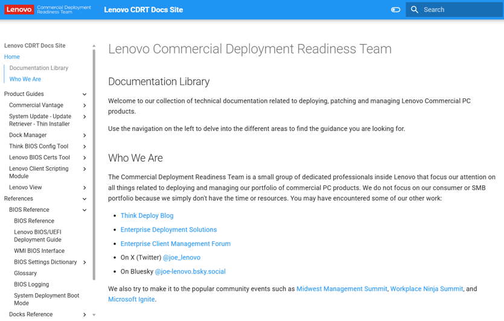

CDRT Docs Site
Product guides, BIOS references and scripting examples.
Inventory
- What it is
- Detailed documentation for every CDRT client management solution on a single site.
- Contains
- Product guides, references, BIOS settings and scripting examples.
- Address
- docs.lenovocdrt.com
What is there
The docs site is where the CDRT team publishes the latest guidance on deploying, patching and managing Lenovo commercial PCs. Every tool in this guide links to its full product guide there.
- Guides for the Lenovo software utilities, including Commercial Vantage, the System Update suite, the ThinkVantage PowerShell Library and Dock Manager.
- The BIOS Settings Dictionary for WMI scripting, covering ThinkPad, ThinkCentre and ThinkStation.
- The WMI BIOS interface scripting guide.
- The AMD DASH capabilities reference.
- Lenovo Dock reference materials.

Who writes it
The Commercial Deployment Readiness Team is a small group inside Lenovo that focuses on everything related to deploying and managing Lenovo's commercial PC portfolio. The same engineers write the Think Deploy Blog and answer questions in the Enterprise Client Management Forum.